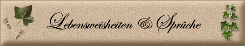
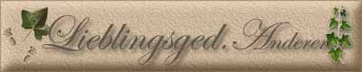

|


 |



Herr
gib mir die Gelassenheit,
die
Dinge hin zunehmen die ich
nicht ändern kann.
Verleihe
mir den Mut die
Dinge zu ändern,
die ich ändern kann
und schenke mir die Weisheit
das eine vom andern zu unterscheiden

Weißt du, worin der Spaß des Lebens liegt?
Sei lustig; - Geht es nicht, so sei vergnügt.
Johann
Wolfgang von Goethe


Am anderen Ende des Regenbogens
Atmosphärische Konflikte
Auf Umwegen
Das bin ich
Das Leben
Der Einsame
Der träumende Delfin
Der wahre
Glaube
Desiderata
Die neunzehn Gebote des Dalai Lama
Die sehr moralische
Autodroschke
Dreizehn Gedanken über das Leben
Ein Hochzeitslied
Erklärungen
Fragen an Germania
Freundschaft
Gebet des älter werdenden
Menschen
Gebet einer unbekannten
Äbtissin
Gebet von Antoine de
Saint-Exupéry
Gedichte und Verse der Liebe
Glück
Ich habe dich so lieb!
Interview mit Gott
Jüdischer Wunsch
Kinder
Liebe
Nutze die Zeit
Ohne Liebe
Spuren im Sand
Unzufrieden
Was ist es?
Zeitgenössische Parabel
Was ist es?
Es ist Unsinn, sagt die Vernunft
Es ist was es ist sagt die Liebe
Es ist Unglück sagt die Berechnung
Es ist nichts als Schmerz sagt die Angst
Es ist aussichtslos sagt die Einsicht
Es ist was es ist sagt die Liebe
Es ist lächerlich sagt der Stolz.
Es ist leichtsinnig sagt die Vorsicht
Es ist unmöglich sagt die Erfahrung
Es ist was es ist sagt die Liebe
Erich Fried
Erklärungen
Entmutigend ist
das Begehren, den andern etwas
zu erklären,
Wenn der
Erklärende vergisst, wie schwierig das
Erklären ist.
Nach der Erklärung
wird oft klar, dass
es doch vorher klarer war.
Nutze die Zeit
Eine von den schönsten Gaben
ist, im Leben Zeit zu haben.
Und dass man sie - weis` und gut
dann auch richtig nutzen tut !
Drum bedenkt, ihr alten Knaben
und auch Mädchen: Zeit zu haben
ist vom Schöpfer wohl gedacht,
dass man Gutes damit macht,
und dieses Gute dann auch nutzt,
bevor man einst wird weggeputzt.
Denn, ist man einmal dort oben,
wird der Schöpfer uns nicht loben,
dass wir seine Zeitguthaben
auf Erden nur verplempert haben!
November 1997 "zeitnutz" Georg Segessenmann
Auf Umwegen
Ein Mensch, der, was auch kommen möge,
Niemals die andern glatt belöge,
Lügt drum, denn dies scheint ihm erlaubt
Zuerst sich selbst an, bis ers glaubt.
Was er nun fast für Wahrheit hält,
Versetzt er dreist der ganzen Welt.
Eugen Roth
Ich
hab dich so lieb
Ich habe dich
so lieb!
Ich würde dir ohne
Bedenken
Eine Kachel aus meinem
Ofen
Schenken.
Ich habe dir nichts
getan.
Nun ist mir traurig zu
Mut.
An den Hängen der
Eisenbahn
Leuchtet der Ginster
so gut.
Vorbei - verjährt -
Doch nimmer vergessen.
Ich reise.
Alles, was lange
währt,
Ist leise.
Die Zeit entstellt
Alle Lebewesen.
Ein Hund bellt.
Er kann nicht lesen.
Er kann nicht
schreiben.
Wir können nicht
bleiben.
Ich lache.
Die Löcher sind die
Hauptsache
An einem Sieb.
Ich hab dich so lieb.
Joachim Ringelnatz
Der
Einsame
Wer einsam ist, der hat es gut,
Weil keiner da, der ihm was tut.
Ihn stört in seinem Lustrevier
Kein Tier, kein Mensch und kein Klavier,
Und niemand gibt ihm weise Lehren,
Die gut gemeint und bös zu hören.
Der Welt entronnen, geht er still
In Filzpantoffeln, wann er will.
Sogar im Schlafrock wandelt er
Bequem den ganzen Tag umher.
Er kennt kein weibliches Verbot,
Drum raucht und dampft er wie ein Schlot.
Geschützt vor fremden Späherblicken,
Kann er sich selbst die Hose flicken.
Liebt er Musik, so darf er flöten,
Um angenehm die Zeit zu töten,
Und laut und kräftig darf er prusten,
Und ohne Rücksicht darf er husten,
Und allgemach vergisst man seiner.
Nur allerhöchstens fragt mal einer:
Was, lebt er noch? Ei, Schwerenot,
Ich dachte längst, er wäre tot.
Kurz, abgesehen vom Steuerzahlen,
Lässt sich das Glück nicht schöner malen.
Worauf denn auch der Satz beruht:
Wer einsam ist, der hat es gut.
Wilhelm Busch (1832-1908)
Liebe ist ein
Geschenk und groß ist der
der lieben kann ohne zu besitzen.
Forderungen gehören nicht zur Liebe.
Sie ist wie ein Vogel der sich auf deine Hand gesetzt hat
und: solange er sich wohl fühlt,
wegfliegen und zurückkommen kann,
wird er wieder kommen.
Und du wirst nicht damit rechnen, nicht planen,
aber dich freuen, wenn er sich wieder auf deine Hand setzt.
Weil: Er kommt
ohne Forderungen und Verpflichtung zu dir
Ein Hochzeitslied
"Heiraten in der Jugend heißt, sich im Sommer einen Ofen mieten; erst im
Winter weiß man, ob er heizt oder raucht."
Aus dem "Ideen-Gewimmel"
Wenn lieben heißt, sich aneinanderketten,
dann möcht ich lieber lieb-los sein.
Doch lieben bindet nicht, lieben befreit.
Wenn leben heißt, nur für den andern dazu sein,
dann möcht ich lieber leb-los sein.
Doch Leben ist nur Leben, wenn ich lebe.
Wenn Frieden heißt, sich niemals zu bekämpfen,
dann möcht ich lieber fried-los sein.
Doch Frieden stellt sich ein erst nach dem Streit.
Wenn Freude heißt, den anderen glücklich zu machen,
dann möcht ich lieber freud-los sein.
Doch Freude sprudelt grundlos meine Vielfalt.
Wenn trösten heißt, aus Mitleid handeln,
dann möcht ich lieber trost-los sein.
Doch trösten vertraut dem Trauern.
Wenn Ehe heißt, im Hafen festzusitzen,,
dann möcht ich lieber ehe-los sein.
Doch Ehe macht sich auf in unbekannte Weiten.
Wenn Treue heißt, sich aufeinander zu beschränken
dann möcht ich lieber treu-los sein.
Doch Treue will sich lassen, statt sich zu verlassen.
Wenn Kinderkriegen heißt, dem Leben Sinn zu geben,
dann möcht ich lieber kinder-los bleiben.
Doch Kinder nehmen sinn-voll teil an unserem Leben.
(Jean Paul - Friedrich Richter)
Atmosphärische Konflikte
Die Bäume
schielen nach dem Wetter.
Sie prüfen es. Dann murmeln sie:
>>Man weiß in diesem Jahre nie,
ob nun raus mit die Blätter
oder rin mit die Blätter
oder wie?<<
Aus Wärme wurde
wieder Kühle.
Die Oberkellner werden blass
und fragen ohne Unterlass:
>>Also, raus mit die Stühle
oder rin mit die Stühle
oder was?<<
Die Pärchen
meiden nachts das Licht.
Sie hocken Probe auf den Bänken
in den Alleen, wobei sie denken:
>>Raus mit die Gefühle
oder rinn mit die Gefühle
oder nicht?<<
Der Lenz geht
diesmal auf die Nerven
und gar nicht, wie es heißt, ins Blut.
Wer liefert Sonne in Konserven?
Na, günstigen Falles
wird doch noch alles gut.
Es ist schon warm. Wird es so bleiben?
Die Knospen springen im Galopp.
Und auch das Herz will Blüten treiben.
Drum, raus mit die Stühle
und rinn mit die Gefühle,
als ob!
Die sehr moralische Autodroschke
Er brachte
sie im Auto nach Haus.
Sie erzählte von ihrem Mann.
Er wusste,
sie sähe entzückend aus.
Doch blickte er sie nicht an.
Sie fuhren durch die Alleen der Nacht.
Am Steuer saß irgendwer.
Die Sterne hatten sich hübsch gemacht.
Die Alleen waren ziemlich leer.
Und wenn das Auto Kurven nahm,
dann trafen sich ihre Knie.
Und wenn er ihr allzu nahe kam,
dann zitterten er und sie.
Er
sprach von einem Theaterstück.
Das klang ein wenig gepresst.
Sie sprach von ihrem Familienglück.
Ihre Stimme war nicht sehr fest.
Stets spürte er ihren Blick auf sich,
obwohl er durchs Fenster sah.
Und plötzlich wurde sie ärgerlich
und meinte, sie wären gleich da...
Dann waren sie eine Weile stumm.
In der Luft verbarg sich ein Blitz.
Doch fand er schließlich das Ganze zu dumm
und erzählte ihr einen Witz.
Die Luft war mild. Und das Auto fuhr.
Es roch nach Glück und Benzin.
Sie achteten wenig auf die Natur
und streiften sich mit den Knien.
Dann stiegen sie aus. Er gab ihr die Hand.
Und ging. Und fand alles gut.
Doch als er daheim im Zimmer stand,
zertrampelte er seinen Hut.
Ohne Liebe
Pflichtbewusstsein ohne Liebe
macht verdrießlich
Verantwortung ohne Liebe
macht rücksichtslos
Gerechtigkeit ohne Liebe
macht hart
Wahrhaftigkeit ohne Liebe
macht kritiksüchtig
Klugheit ohne Liebe
macht betrügerisch
Freundlichkeit ohne Liebe
macht heuchlerisch
Ordnung ohne Liebe
macht kleinlich
Sachkenntnis ohne Liebe
macht rechthaberisch
Macht ohne Liebe
macht grausam
Ehre ohne Liebe
macht hochmütig
Besitz ohne Liebe
macht geizig
Glaube ohne Liebe
macht fanatisch
Laotse
Fragen an Germania
Heinrich Heine,
Friedrich Schiller,
der Mörike und Claudius,
dazu noch Rilke und Fontane,
Freiligrath und Wilhelm Busch,
steht hier ein Teil, nur jener Namen,
die sprachen über Dichterlust,
im Kreise und in kleinen Gruppen,
Nur der Herr
Goethe, der stand abseits,
im Dichterhain von Raum und Zeit,
und fragte selber sich, leicht zweifelnd,
warum man heute nicht mehr reimt?
Und wie er nachdenkt und sinniert,
er plötzlich kühle Schönheit spürt,
Germania stand
als launisch Weib,
auf ihrem Thron im Abendschein.
Germania sprach mit stolzer Brust:
"Ich bin das Land der Dichterlust!
Seht her, ich zeig mein Dichterkleid,
mit euren Namen, aus ferner Zeit!
Als Land der Dichter, Philosophen,
darf man mich ehren und auch loben!"
Und zeigte gleich als launisch Weib,
im Abendlicht ihr schönstes Kleid!
Die Dichter
staunten und sie raunten,
Germania hier im Dichterhain?
Was will sie sagen, uns verkünden?
Vielleicht was man ihr heut so reimt?
Doch die Germania wollt nur prahlen,
voll Stolz und mit viel Hochgenuss,
mit lauter Stimme, bebend Brust.:
"Ich bin das Land der Dichterlust."
Auch Goethe
schaute zu ihr hoch,
und wie er steht vor ihrem Thron,
da spricht er leise, fast mit Hohn.:
"Bist du so blind und auch noch taub?
Die Dichternamen sind aus Staub!
Schon abgewetzt dein Denkerkleid,
die Dichter tod und fern der Zeit,
vereint jetzt hier im Dichterhain!"
"Germania Land
der Dichter, Denker,
der Poesie und auch der Henker,
starrst in den Nebel der Geschichte,
schaust dich nach großen Namen um,
und suchst Gedichte nur von Gräbern,
suchst sie fernab in staubig Gruft.
Schau dir doch an dein Denkerkleid!
Und sprich, wer heut noch Dichter heißt?"
"Kein neuer Reim
und kein Gedicht,
wie es ist einst uns selbst geglückt,
stattdessen les ich Sexgeflüster,
Skandalgeschichten von Ministern,
und wenn ich tief zur Erde schau,
seh ich vom Kanzler gar die Frau,
wo noch ein Kochbuch? Germania sprich!
Denn soviel Kochtöpf hab ich nicht!"
"Manch Hure
schreibt, auch Mörderhand,
was ist geschehn im Dichterland?
Denn manche Dichter müssen hungern,
tun auf dem Arbeitsamt jetzt lungern!
Dabei wollt ich dich doch nur fragen,
was du Germania würdest sagen?
Wenn du es liest, hier mein Gedicht,
wenn garstig es voll Vorwurf spricht?"
Denn stehst
Germania, du am Schandbrett,
weil dein Schwert ist blutverschmiert,
weil du nach Streit und viel Gezeter,
mal wieder einen Krieg verlierst,
dann gar plötzlich, gibts ein Wunder,
falln dir gleich viele Söhne ein,
die uns erzählen, preisen, dichten,
vom edlen Wein und deutschen Rhein!
Willst wieder Land der Dichter sein?
Wolfgang
Schwamberger
Kinder
Eure Kinder sind nicht eure Kinder. Sie sind
die Söhne und Töchter der Sehnsucht des Lebens nach sich selber. Sie
kommen durch euch, aber nicht von euch, und obwohl sie mit euch sind,
gehören sie euch doch nicht.
Ihr dürft ihnen euere Liebe geben, aber nicht
eure Gedanken. Denn sie haben ihre eigenen Gedanken.
Ihr dürft ihren Körpern ein Haus geben, aber
nicht ihren Seelen, denn ihre Seelen wohnen im Haus von morgen, das ihr
nicht besuchen könnt, nicht einmal in euren Träumen.
Ihr dürft euch bemühen, wie sie zu sein, aber
versucht nicht, sie euch ähnlich zu machen. Denn das Leben läuft nicht
rückwärts, noch verweilt es im Gestern.
Ihr seid die Bogen, von denen euere Kinder
als lebende Pfeile ausgeschickt werden. Der Schütze sieht das Ziel auf dem
Pfad der Unendlichkeit, und er spannt euch mit seiner Macht, damit seine
Pfeile schnell und weit fliegen.
Lasst euren Bogen von der Hand des Schützen
auf Freude gerichtet sein; denn so wie er den Pfeil liebt, der fliegt, so
liebt er auch den Bogen der fest ist.
Khalil Gibran
Das bin ich
Du
möchtest wissen, wer ich bin?
Kein Buch, das streng versiegelt.
Ich trete offen vor dich hin,
vollkommen ungeschniegelt.
Ich bin kein tosender Orkan,
entfesselt von Dämonen,
kein sturmbewegter Ozean,
in dem Titanen wohnen.
Ich bin ein kleiner, stiller See,
der tut, als ob er schliefe.
Der eine wächst halt in die Höh',
der andre in die Tiefe.
Ein Himmelsstürmer bin ich nicht,
den einst die Götter zeugten.
Es dient nur mein bescheiden Licht,
den Menschen heimzuleuchten.
Ich sing' mein Liedchen, wie's mir paßt,
den Mädchen und den Knaben.
Und wenn du mich nicht gerne hast,
kannst du mich gerne haben.
(Fred Endrikat)
Wenn die Liebe
winkt, folge ihr, sind ihre Wege auch schwer und steil.
Und wenn ihre Flügel Dich umhüllen, gib Dich ihr hin,
auch wenn das unterm Gefieder versteckte Schwert Dich verwunden kann.
Und wenn sie zu Dir spricht, glaube an sie,
auch wenn ihre Stimme Deine Träume zerschmettern kann
wie der Nordwind den Garten verwüstet.
Denn so wie Die Liebe dich krönt, kreuzigt sie dich.
So wie sie Dich wachsen läßt, beschneidet sie Dich.
So wie sie emporsteigt zu Höhen
und die zartesten Zweige liebkost die in der Sonne zittern,
steigt sie hinab zu Deinen Wurzeln
und erschüttert sie in ihrer Erdgebundenheit.
Wie Korngaben sammelt sie Dich um sich.
Sie drischt Dich, um Dich nackt zu machen.
Sie siebt Dich, um Dich von Deiner Spreu zu befreien.
Sie mahlt Dich, bis Du weiß bist.
Sie knetet Dich, bis Du geschmeidig bist
und dann weiht sie Dich ihrem heiligen Feuer,
damit Du heiliges Brot wirst für Gottes heiliges Mahl.
All dies wird die Liebe mit Dir machen,
damit Du die Geheimnisse Deines Herzen kennen lernst
und in diesem Wissen ein Teil vom Herzen des Lebens wirst.
Aber wenn Du in Deiner Angst nur die Ruhe und die Lust der Liebe suchst,
dann ist es besser für Dich, Deine Nacktheit zu bedecken
und vom Dreschboden der Liebe zu gehen.
In der Welt der Jahreszeiten wo Du lachen wirst
aber nicht Dein ganzes Lachen -
und weinen - aber nicht all Deine Tränen.
Liebe besitzt nicht, noch lässt sie besitzen denn die liebe genügt der
Liebe.
Wenn Du liebst, solltest Du nicht sagen: Gott ist in meinem Herzen,
sondern: Ich bin in Gottes Herzen.
Und glaube nicht Du kannst den Lauf der Liebe lenken,
denn die Liebe wenn sie Dich für würdig hält, lenkt Deinen Lauf.
Liebe hat keinen anderen Wunsch als sich zu erfüllen.
Aber wenn Du liebst und Wünsche haben musst,
solltest Du Dir dies wünschen:
zu schmelzen und wie ein plätschernder Bach zu sein,
der seine Melodie der Nacht singt.
Den Schmerz allzu vieler Zärtlichkeit zu kennen.
Vom eigenen Verstehen der Liebe verwundert zu sein
und willig und freudig zu bluten.
Bei der Morgenröte mit beflügeltem Herzen zu erwachen und für
einen weiteren Tag des Liebens dankzusagen.
Zur Mittagszeit zu ruhen und über die Verzückung der Liebe nachzusinnen.
Am Abend mit Dankbarkeit heimzukehren und dann einzuschlafen
mit einem Gebet für die Geliebte im Herzen
und einem Lobgesang auf den Lippen.
Khalil
Gibhran
Gedichte über die Freundschaft
Freundschaften zu schließen,
wenn die Welt in Ordnung ist
und wenn man Spaß hat miteinander -
ist einfach.
Freundschaften zu schließen,
wenn Wunderbares sich ereignet,
auf das man sich gemeinsam freuen kann -
ist einfach.
Freundschaften zu schließen,
in einer fesselnden Umwelt,
in der man gemeinsam
Glück finden kann - ist einfach.
Aber, einen Freund zu finden, der uns beisteht,
wenn wir in Schwierigkeiten sind
und unser Leben verworren scheint -
ist schwierig.
Ich danke Dir dafür,
dass Du einer der wenigen Menschen bist,
der ein echter Freund auf Lebenszeit ist.
Unsere Vorfahren
De Wenden un de Sorm,
Die sin schon längst geschtorm.
Wo friedlich die mal saßen,
Dun jetz de Audos rasen,
's Gedude will nich enden.
Ach, wißten das de Wenden!
De Wenden un de Sorm,
Die schtaunten da enorm.
Lene Voigt
..
Jüdischer
Wunsch
Ich wünsche
Dir einen Mund,
der das Unrecht beim Namen nennt
und der nicht verlegen ist
um ein Wort des Trostes und der Liebe
zur rechten Zeit.
Ich wünsche Dir Hände,
mit denen Du liebkosen
und Versöhnung bekräftigen kannst
und nicht festhalten,
was Du in Fülle hast
und teilen kannst.
Ich wünsche Dir Füße,
die Dich auf den Weg bringen
zu dem, was wichtig ist,
und nicht stehen bleiben
vor den Schritten,
die entscheidend sind.
Ich wünsche Dir ein Rückgrat,
mit dem Du aufrecht
und aufrichtig leben kannst
und das sich nicht beugt
vor Unterdrückung,
Willkür und Macht.
Ich wünsche Dir ein Herz,
in dem viele Menschen zuhause sind,
und das nicht müde wird,
Liebe zu üben und Schuld zu verzeihen.
Glück
Glück ist gar nicht mal so selten,
Glück wird überall beschert,
vieles kann als Glück uns gelten,
was das Leben uns so lehrt.
Glück ist jeder neue Morgen,
Glück ist bunte Blumenpracht
Glück sind Tage ohne Sorgen,
Glück ist wenn man fröhlich lacht.
Glück ist Regen, wenn es heiß ist,
Glück ist Sonne nach dem Guss,
Glück ist, wenn ein Kind ein Eis isst,
Glück ist auch ein lieber Gruß.
Glück ist Wärme, wenn es kalt ist,
Glück ist weißer Meeresstrand,
Glück ist Ruhe, die im Wald ist,
Glück ist eines Freundes Hand.
Glück ist eine stille Stunde,
Glück ist auch ein gutes Buch,
Glück ist Spaß in froher Runde,
Glück ist freundlicher Besuch.
Glück ist niemals ortsgebunden,
Glück kennt keine Jahreszeit,
Glück hat immer der gefunden,
der sich seines Lebens freut.
Clemens von Brentano
Unzufrieden
Die Menschen sind oft unzufrieden
und hätten das doch gern vermieden.
Es gibt nur ein Rezept dagegen:
Erwartungslatte niedrig legen!
Dann ist sie auch bei heiklen Dingen
noch elegant zu überspringen,
wogegen viele sie zu hoch ansetzen
und ihre Sprungkraft ständig überschätzen.
Karl-Heinz Söhler
Das
Leben ist eine Chance, nutze sie.
Das Leben ist Schönheit, Bewundere sie.
Das Leben ist Seligkeit, genieße sie.
Das Leben ist ein Traum, mach daraus Wirklichkeit.
Das Leben ist eine Pflicht, erfülle sie.
Das Leben ist ein Spiel, spiele es.
Das Leben ist kostbar, geh sorgfältig damit um.
Das Leben ist Reichtum, bewahre ihn.
Das Leben ist Liebe, erfreue dich an ihr.
Das Leben ist ein Rätsel, durchdringe es.
Das Leben ist Versprechen, erfülle es.
Das Leben ist Traurigkeit, überwinde sie.
Das Leben ist eine Hymne, singe sie.
Das Leben ist Herausforderung, stelle dich ihr.
Das Leben ist ein Kampf, akzeptiere ihn.
Das Leben ist eine Tragödie, ringe mit ihr.
Das Leben ist ein Abenteuer, wage es.
Das Leben ist Glück, verdiene es.
Das Leben ist das Leben, verteidige es.
Mutter Teresa
Gebet
des älter werdenden Menschen
O Herr, du weißt besser
als ich, dass ich von Tag zu Tag älter und eines Tages alt sein werde.
Bewahre mich vor der Einbildung, bei jeder Gelegenheit und zu jedem Thema
etwas sagen zu müssen.
Erlöse mich von der Leidenschaft, die Angelegenheiten anderer ordnen zu
wollen.
Lehre mich, nachdenklich, aber nicht grüblerisch, hilfreich, aber nicht
diktatorisch zu sein.
Bei meiner ungeheuren Ansammlung von Weisheit erscheint es mir ja schade,
sie nicht weiterzugeben – aber du verstehst, o Herr, dass ich mir ein paar
Freunde erhalten möchte.
Bewahre mich vor der Aufzählung endloser Einzelheiten und verleihe mir
Schwingen, zur Pointe zu gelangen.
Lehre mich schweigen über meine Krankheiten und Beschweren. Sie nehmen zu
und die Lust, sie zu beschreiben, wächst von Jahr zu Jahr.
Ich wage nicht, die Gabe zu erflehen, mir Krankheitsschilderungen anderer
mit Freude anzuhören, aber lehre mich, sie geduldig zu ertragen.
Lehre mich die wunderbare Weisheit, dass ich mich irren kann.
Erhalte mich so leibenswert wie möglich. Ich möchte kein Heiliger sein –
mit ihnen lebt es sich so schwer, aber ein alter Griesgram ist das
Krönungswerk des Teufels.
Lehre mich, an anderen Menschen unerwartete Talente zu entdecken, und
verleih mir die schöne Gabe, sie auch zu erwähnen.
(Hl.
Theresa von Avila, 1515-1582)
Gebet von
Antoine de Saint-Exupéry
Ich bitte nicht um Wunder und Visionen, sondern, um
Kraft für den Alltag. Lehre mich die Kunst der kleinen Schritte.
Mach mich findig und erfinderisch, um im täglichen
Vielerlei und Allerlei rechtzeitig meine Erkenntnisse und Erfahrungen zu
notieren, von denen ich betroffen bin.
Mach mich griffsicher in der richtigen
Zeiteinteilung. Schenke mir das Fingerspitzengefühl, um herauszufinden,
was erstrangig und was zweitrangig ist.
Ich bitte um Kraft für Zucht und Maß, dass ich nicht
durch das Leben rutsche, sondern den Tagesablauf vernünftig einteile, auf
Lichtblicke und Höhepunkte achte und wenigstens hin und wieder Zeit finde
für einen kulturellen Genuss.
Lass mich erkennen, dass Träume nicht weiterhelfen,
weder über die Vergangenheit, noch über die Zukunft, Hilf mir, das Nächste
so gut wie möglich zu tun und die jetzige Stunde als die wichtigste zu
erkennen.
Bewahre mich vor dem naiven Glauben, es müsste im
Leben alles glatt gehen. Schenke mir die nüchterne Erkenntnis, dass
Schwierigkeiten, Niederlagen, Misserfolge, Rückschläge eine
selbstverständliche Zugabe zum Leben sind, durch die wir wachsen und
reifen.
Erinnere mich daran, dass das Herz oft gegen den
Verstand streikt. Schick mir im rechten Augenblick jemand der den Mut hat,
mir die Wahrheit in Liebe zu sagen.
Ich möchte Dich und die anderen immer aussprechen
lassen. Die Wahrheit sagt man nicht sich selbst, sie wird einem gesagt.
Ich weiß, dass sich viele Probleme dadurch lösen,
dass man nichts tut. Gib, dass ich warten kann.
Du weißt, wie sehr wir der Freundschaft bedürfen.
Gib, dass ich diesem schönsten, schwierigsten, riskantesten und zartesten
Geschenk des Lebens gewachsen bin.
Verleihe mir die nötige Phantasie, im rechten
Augenblick ein Päckchen Güte mit oder ohne Worte, an der richtigen Stelle
abzugeben.
Mach aus mir einen Menschen, der einem Schiff im
Tiefgang gleicht, um auch die zu erreichen, die „unten“ sind.
Bewahre mich vor der Angst, ich könnte das Leben
versäumen. Gib mir nicht, was ich mir wünsche, sondern was ich brauche.
Lehr mich
die Kunst der kleinen Schritte!
Gebet einer unbekannten Äbtissin
Herr, ich spüre, dass ich älter werde; ich ahne, dass ich sehr bald zu den
Alten gehöre. Du weißt das auch. Bewahre mich vor allem, was die Alten so
unbeliebt macht. Behüte mich vor Geschwätzigkeit. Lass mich nicht meinen,
ich müsse bei jeder Gelegenheit mich zu allem äußern. Gib mir die
Einsicht, dass ich zuweilen unrecht haben kann. Befreie mich von dem
eitlen Verlangen, jedermanns Angelegenheit in Ordnung bringen zu wollen.
Halte mich frei davon, den anderen alle Einzelheiten meines Alltags
aufzudrängen. Schenke mir Geduld, wenn andere mir ihre Leiden klagen; aber
versiegle meine Lippen, wenn ich meine eigenen zunehmenden Schmerzen und
Gebrechen ausbreiten möchte. Und wenn ich doch darüber spreche, dann lass
es mich so tun, dass deine Güte dadurch nicht verdunkelt wird. Mach mich
hilfsbereit, aber nicht geschäftig; fürsorglich, aber nicht
herrschsüchtig. Am Ende aber lass mich nicht einsam sein. Ich brauche dann
ein paar Freunde, lieber Herr, gute Freunde. Aber das weißt du auch.
Desiderata
Von Max Ehrmann
Amerikanischer Dichter und Dramatiker (1872-1945)
Gehe
gelassen durch das Lärmen und Hasten und vergiss nicht, welcher Friede im
Schweigen sein kann. Stelle dich, soweit das ohne Kapitulation möglich
ist, gut mit allen Leuten. Sage deine Meinung ruhig und klar- und höre
anderen zu, selbst den Einfältigen und Unwissenden, auch sie haben etwas
zu sagen.
Meide
die Lauten und Aggressiven, sie sind eine Plage für Geist und Seele. Wenn
du dich mit anderen vergleichst, wirst du vielleicht hochmütig oder
verbittert, denn es wird immer Größere und Geringere geben als dich. Freue
dich an deinen Leistungen wie an deinen Plänen.
Vernachlässige deinen Beruf nicht, sei er noch so bescheiden, er ist ein
fester Halt in den Wechselfällen des Lebens. Sei vorsichtig in
geschäftlichen Dingen, denn die Welt ist voller Lug und Trug. Aber lass
dich davon nicht blind machen für hohe Ideale, und überall ist das Leben
voll Heldentums.
Sei du
selbst. Vor allem heuchle keine Zuneigung. Sprich auch nicht zynisch über
die Liebe, denn angesichts all der Schalheit und Ernüchterung ist sie
unvergänglich wie Gras.
Nimm
den Rat der Jahre freundlich an, verzichte mit Abstand auf die Freude der
Jugend. Stärke deine innere Kraft, damit du gegen Plötzliche
Schicksalsschläge gewappnet bist. Aber quäle dich nicht mit
Hirngespinsten. Viele Ängste erwachen aus Erschöpfung und Einsamkeit.
Abgesehen von einer heilsamen Selbstdisziplin geh gelinde mit dir um.
Du
bist ein Kind des Universums, nicht geringer als die Bäume und die Sterne,
du hast ein recht dazu sein. Und ob du es begreifst oder nicht, das
Universum entfaltet sich unleugbar, wie es soll.
Deshalb lebe in Frieden mit Gott, was du dir unter ihm auch vorstellst,
wie hart du auch arbeitest, wonach du auch strebst, in dem lärmenden
Wirrwarr des Lebens halte Frieden mit deiner Seele.
Trotz
allen Blendwerks, aller Plackerei und aller zerbrochenen Träume ist es
eine schöne Welt.
Sei
auf der Hut. Kämpfe um dein Glück!
Wörtlich bedeutet der Titel (von
lateinisch desiderare, „ersehnen“, „wünschen“) etwa
(Segens)wünsche.
Eine verbreitete Legende behauptet, es
stamme aus der Old St. Paul´s-Kirche, Baltimore 1692.
Der träumende Delfin
Es kommt eine Zeit im Leben,
da bleibt einem nichts anderes übrig,
als seinen eigenen Weg zu gehen.
Eine Zeit, in der man die eigenen Träume verwirklichen muss.
Eine Zeit, in der man endlich für die eigenen Überzeugungen eintreten
muss.
Gerade in
der größten Verzweiflung hast du die Chance,
dein wahres Selbst zu finden.
Genauso wie die Träume lebendig werden,
wenn du am wenigsten damit rechnest,
wird es mit den Antworten auf jene Fragen sein,
die du nicht lösen kannst.
Folge deinem Instinkt wie einem Pfad der Weisheit,
und lass Hoffnung deine Ängste vertreiben.
Vielleicht bedeutet Liebe auch lernen,
jemanden gehen zu lassen,
wissen, wann es Abschiednehmen heißt.
Nicht zu lassen, dass unsere Gefühle dem im Weg stehen,
was am Ende wahrscheinlich besser ist
für die, die wir lieben.
Die meisten von uns sind nicht in der Lage,
über ihre Misserfolge hinwegzukommen;
deshalb gelingt es uns auch nicht, unsere Bestimmung zu erfüllen.
Es ist leicht, für etwas einzutreten, das kein Risiko birgt.
Träume
bedeuten vielleicht ein hartes Stück Arbeit.
Wenn wir versuchen, dem auszuweichen,
können wir den Grund, warum wir zu träumen begannen,
aus den Augen verlieren,
und am Ende merken wir,
dass der Traum gar nicht mehr uns gehört.
Wenn wir einfach der Weisheit unseres Herzens
folgen,
wird die Zeit vielleicht dafür sorgen,
dass wir unsere Bestimmung erfüllen.
Gerade wenn
du schon fast aufgeben willst,
gerade wenn du glaubst,
dass das Leben zu hart mit dir umspringt,
dann denk daran, wer du bist.
Denk an deinen Traum.
Neue Welten zu entdecken
wird dir nicht nur Glück und Erkenntnis,
sondern auch Angst und Kummer bringen.
Wie willst du das Glück wertschätzen,
wenn du nicht weißt was Kummer ist?
Wie willst Du Erkenntnis gewinnen,
wenn du dich deinen Ängsten nicht stellst?
Letztlich liegt die große Herausforderung des Lebens darin,
die Grenzen in dir selbst zu überwinden und so weit zu gehen,
wie du dir niemals hättest träumen lassen.
Durch unsere
Entscheidungen definieren wir uns selbst.
Allein durch sie können wir unseren Worten und Träumen
Leben und Bedeutung verleihen.
Allein durch sie können wir aus dem,
was wir sind, das machen, was wir sein wollen.
Dort, wohin
du gehst,
gibt es keine Wege, keine Pfade,
du kannst nur deinem Instinkt folgen.
Du hast die Zeichen beachtet
und du bist endlich angekommen.
Nun musst du den großen Sprung ins Unbekannte wagen
und selbst herausfinden:
Wer im Unrecht ist.
Wer im Recht ist.
Wer du bist.
Einige Dinge werden immer
stärker sein als Zeit und Raum,
wichtiger als Sprache und Lebensart.
Zum Beispiel, deinen Träumen nachzugehen
und zu lernen, du selbst zu sein.
Mit anderen das wunderbare Geheimnis zu teilen,
das du entdeckt hast.
Sergio Bambaren
Spuren im Sand
Eines Nachts
hatte ich einen Traum:
Ich ging am Meer entlang mit meinem Herrn.
Vor dem dunklen Nachthimmel
erstrahlten, Streiflichtern gleich,
Bilder aus meinem Leben.
Und jedes Mal sah ich zwei Fußspuren im Sand,
meine eigene und die meines Herrn.
Als das letzte Bild an meinen Augen
vorüber gezogen war, blickte ich zurück.
Ich erschrak, als ich entdeckte,
dass an vielen Stellen meines Lebensweges
nur eine Spur zu sehen war.
Und das waren gerade die schwersten
Zeiten meines Lebens.
Besorgt fragte ich den Herrn:
„Herr, als ich anfing, dir nachzufolgen,
da hast du mir versprochen,
auf allen Wegen bei mir zu sein.
Aber jetzt entdecke ich,
dass in den schwersten Zeiten meines Lebens
nur eine Spur im Sand zu sehen ist.
Warum hast du mich allein gelassen,
als ich dich am meisten brauchte?“
Da antwortete er: „Mein liebes Kind,
ich liebe dich und werde dich nie allein lassen,
erst recht nicht in Nöten und Schwierigkeiten. Dort, wo du nur eine Spur
gesehen hast,
da habe ich dich getragen.“
Margaret Fishback Powers
Interview mit Gott
Ich
träumte, ich hätte ein Interview mit Gott
„Du möchtest also ein Gespräch mit mir?" fragte Gott.
„Wenn Du die Zeit hast", sagte ich. Gott lächelte.
„Meine Zeit ist die Ewigkeit"
„Welche Fragen würdest Du mir gerne stellen?"
„Was erstaunt Dich am meisten an den Menschen?"
Gott antwortete....
„Dass sie der Kindheit überdrüssig werden.
Sich beeilen, erwachsen zu werden, um sich dann danach zu sehnen, wieder
Kinder sein zu können."
„Dass sie um Geld zu verdienen ihre Gesundheit auf’s Spiel setzen und dann
ihr Geld ausgeben, um wieder gesund zu werden."
„Dass sie durch die ängstlichen Blicke in ihre Zukunft das Jetzt
vergessen, so dass sie weder in der Gegenwart, noch in der Zukunft leben."
„Dass sie leben, als würden sie niemals sterben, um dann zu sterben, als
hätten sie nie gelebt."
Gott nahm meine Hand und wir schwiegen gemeinsam eine Weile.
Dann wollte ich wissen...
„Was möchtest Du, dass Deine Kinder lernen?"
Gott antwortete mit einem Lächeln.
„Dass man niemanden veranlassen kann, jemanden zu lieben, sondern zulassen
darf, geliebt zu werden."
„Dass es nicht förderlich ist, sich mit anderen zu vergleichen."
„Dass eine „reiche" Person nicht jemand ist, der/die das meiste hat,
sondern vielleicht das wenigste braucht."
„Dass es nur einige Sekunden braucht, einem Menschen tiefe Wunden
zuzufügen, jedoch viele Jahre, diese wieder zu heilen."
„Dass Vergebung durch gelebtes Vergeben geschieht."
„Dass es Menschen gibt, die sie tief und innig lieben, jedoch nicht
wissen, wie sie ihre Gefühle ausdrücken können."
„Dass zwei Menschen dasselbe betrachten können und es unterschiedlich
sehen."
„Dass es manchmal nicht genug ist, Vergebung zu erhalten, sondern sich
selbst zu vergeben."
„Und dass ich hier bin......immer."
Anguttara Nikayo
Der wahre Glaube
Der Sohn
des Kesa aus Kalamo kam einmal zum Buddha und klagte: "Meister, jeder
Priester und Mönch erhebt mir gegenüber seinen Glauben zum einzig wahren
und verurteilt den Glauben der anderen als falsch. Zweifel quälen mich,
weil ich nicht weiß, welchen Worten ich folgen soll."
Der Buddha erwiderte: "Deine Zweifel sind gerechtfertigt, Sohn des Kesa.
Höre meinen Rat: Glaube nichts auf bloßes Hörensagen hin; glaube nicht an
Überlieferungen, bloß, weil sie alt und durch viele Generationen gegangen
sind; glaube nichts aufgrund von Gerüchten oder weil viel darüber geredet
wird; glaube nichts, bloß, weil es ein alter Weiser bezeugt; glaube nie
etwas, weil Vermutungen oder langjährige Gewohnheit dich verleiten es für
wahr zu halten; glaube nichts auf die bloße Autorität deiner Lehrer und
Geistlichen hin.
Was jedoch nach eigener Erfahrung und Untersuchung mit deiner Vernunft
übereinstimmt und zu deinem eigenen Wohle und Heile wie zu dem aller
anderen Wesen dient, das nimm als Wahrheit und lebe danach!"
13 Gedanken über das Leben
-
Ich liebe dich nicht für das, was du bist, sondern
für das, was ich bin, wenn ich mit dir bin.
-
Keiner verdient deine Tränen, und wer sie verdient,
wird dich sicher nicht zum Weinen bringen.
-
Wenn dich jemand nicht so liebt, wie du es
wünschst, dann bedeutet das nicht, dass er dich nicht über alles liebt.
-
Ein wahrer Freund ist der, der dich an der Hand
hält und am Herzen berührt.
-
Der schlimmste weg zu fühlen, das dir jemand fehlt,
ist: wenn du an seiner Seite stehst und erkennen musst, dass er dir
niemals gehören wird.
-
Höre niemals auf zu lächeln, auch wenn du traurig
bist, denn es könnte sich jemand in dein Lächeln verlieben.
-
Für die Welt bist du vielleicht niemand, aber für
manche bist du die Welt.
-
Verliere deine Zeit nicht mit jemandem, der nicht
zu dir steht.
-
Vielleicht sieht es dein Lebensweg vor, dass du
viele schlechte Menschen kennen lernen musst, ehe du den wahren Freund
triffst, damit du dann dankbar sein kannst, wenn du ihn getroffen hast.
-
Weine nicht, wenn etwas vorbei ist, sondern freu’
dich darüber, dass du es erleben konntest.
-
Es wird immer eine Person geben, die dich
kritisiert, aber bewahre Vertrauen, vor allem jenen gegenüber, die dir
ihr Vertrauen zweimal schenkten.
-
Werde ein besserer Mensch und sorge dafür, dich
selbst zu erkennen, ehe du jemanden kennen lernst, von dem du erwartest,
dass er dich richtig erkennt.
-
Irre nicht suchen herum, die schönsten Dinge
ergeben sich dann, wenn du sie am wenigsten erwartest….
Die 19 Gebote des Dalai Lama
1. Bedenke, dass große Liebe und große Unternehmungen große
Risiken beinhalten.
2. Wenn du verlierst, verlier nicht, was du
daraus lernst.
3. Respektiere dich selbst. Respektiere die
anderen.
Und übernimm Verantwortung für alles was du tust.
4. Wenn du nicht bekommst, was du willst,
erinnere dich daran,
dass das manchmal dein Glück sein kann.
5. Lerne die Regeln, dann weißt du, wie man
sie richtig bricht.
6. Lass nicht zu, dass ein kleiner Streit
eine große Freundschaft zerstört.
7. Wenn du erkennst, dass du einen Fehler
gemacht hast,
mache sofort Schritte, um ihn zu korrigieren.
8. Verbringe jeden Tag eine Zeit mit dir
allein.
9. Öffne deine Arme für Veränderungen,
aber lass nicht deine Werte gehen.
10. Schweigen ist manchmal die beste Antwort.
11. Lebe ein gutes, ehrenwertes Leben.
Dann kannst du, wenn du älter geworden bist, daran zurückdenken,
um es ein zweites Mal zu genießen.
12. Eine liebevolle Atmosphäre in deinem Haus
ist die beste Basis für dein Leben.
13.Wenn du mit einem geliebten Menschen
streitest,
bezieh dich immer nur auf die gegenwärtige Situation.
Bring nicht die Vergangenheit hoch.
14. Teile dein Wissen mit anderen.
Auch das ist ein Weg zur Unsterblichkeit.
15. Sei gut zur Erde.
16. Gehe einmal im Jahr irgendwohin, wo du
noch nie gewesen bist.
17. Die beste Beziehung ist die, in der die
Liebe füreinander das Brauchen ersetzt.
18. Miss deinen Erfolg daran, wie viel du für
ihn aufgeben musstest.
19. Widme dich der Liebe und dem Kochen mit
wagemutiger Sorglosigkeit.
Ganz weit
draußen,
am anderen Ende
des Regenbogens
werde ich sitzen und auf dich warten
und wenn du dann endlich kommst
werde ich sitzen bleiben
mit verschränkten Armen über den Knien
um dir nicht zu früh zu zeigen
mit welcher Sehnsucht
ich auf dich gewartet habe.
Zeitgenössische Parabel
Ein alter
Indianer saß mit seinem Enkelsohn am Lagerfeuer. Es war schon dunkel
geworden und das Feuer knackte, während die Flammen in den Himmel
züngelten. Der Alte sagte nach einer Weile des Schweigens:
"Weißt du, wie ich mich manchmal fühle? Es ist, als ob da zwei Wölfe in
meinem Herzen miteinander kämpfen würden. Einer der beiden ist
rachsüchtig, aggressiv und grausam. Der andere hingegen ist liebevoll,
sanft und mitfühlend."
"Welcher der beiden wird den Kampf um dein Herz gewinnen?" fragte der
Junge.
"Der Wolf, den
ich füttere." antwortete der Alte.

 |